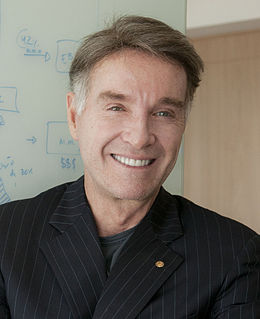

Eike Batista

Doanh chủ đầy năng lượng người Brazil Eike Batista chưa bao giờ ngừng suy nghĩ táo bạo. Là người đàn ông giàu có nhất Brazil, với khối lượng tài sản ròng ước tính khoảng 30 tỷ đô-la, Eike Batista có tham vọng trở thành người giàu có nhất thế giới. Bản năng cạnh tranh được rèn luyện qua nhiều năm đua thuyền tốc độ cao chuyên nghiệp đã thúc đẩy ông công khai tuyên bố sẽ đuổi kịp tỷ phú Carlos Slim của Mexico. Nếu nhìn vào thành tích kinh doanh của ông trong 30 năm qua, chúng ta sẽ thấy rằng việc ông đạt được mục tiêu này cũng không phải là điều gì quá bất ngờ.
Batista giải thích rằng: “Một khi đã cạnh tranh anh sẽ không thể dừng lại. Vì vậy, tôi phải cạnh tranh với Slim. Tôi không biết tôi sẽ vượt ông ấy ở bên phải hay bên trái. Tôi chỉ biết là tôi sẽ vượt qua mà thôi.”
Sự tự tin của Batista cũng không có gì là khó hiểu. Là con trai của cựu Bộ trưởng Bộ Khai khoáng Brazil, Batista là một tỷ phú tự thân và là một tượng đài biểu trưng cho quá trình chuyển đổi của Brazil từ một nền kinh tế yếu kém trở thành một cường quốc kinh tế trên thế giới. Những dự án sáng tạo nhất của ông trong lĩnh vực khai thác tài nguyên thiên nhiên và cơ sở hạ tầng đang giúp Brazil tạo ra của cải và phát triển cơ sở hạ tầng cho dân cư.
Batista từng nói rằng người Brazil đã ẩn mình trong nhiều năm. Ông muốn truyền cảm hứng cho thế hệ doanh chủ mới có thể noi gương ông và phát huy tiềm năng của đất nước. Vì vậy, ông để chiếc xe thể thao Mercedes - Benz SLR McLaren trong phòng khách như một vật trang trí và đặt chữ cái X trong tên của tất cả các công ty của mình như một biểu tượng của sự giàu có theo cấp số nhân.
Ông thẳng thắn bộc lộ quyết tâm của mình: “Tôi đã đặt ra cho mình sứ mệnh giúp thế hệ doanh nhân trẻ của Brazil thành công bằng con đường minh bạch hơn. Họ phải cảm thấy tự hào về điều mà họ đang tạo ra.”
Con người của Batista là như vậy. Là một sinh viên bỏ học giữa chừng, Batista bắt đầu sự nghiệp bằng cách tìm vàng trong rừng Amazon. Năm 24 tuổi, ông mua được một mỏ vàng đầu tiên. Công việc kinh doanh mỏ đã tạo điều kiện cho các cuộc phiêu lưu mạo hiểm của ông vào tận rừng sâu. Ngày nay, hoạt động của Tập đoàn EBX bao gồm các lĩnh vực như: vận chuyển, khai khoáng, năng lượng, hậu cần và nổi bật hơn cả là các công ty khai thác dầu và khí.
Năm 2007, tài sản của Batista tăng lên đáng kể sau khi ông đánh cược một tỷ đô-la để mua giấy phép thăm dò dầu ngoài khơi thành phố Rio de Janeiro. Batista đã gặp may khi tìm thấy một mỏ dầu khổng lồ. Batista tin rằng ông sẽ không phải trả quá 18 đô-la/thùng khi khai thác dầu và điều đó sẽ giúp ông kiếm được khoản lợi nhuận khổng lồ từ nguồn tài nguyên này trong nhiều năm. Sự kiện đó đã khiến ông quyết định đại chúng hóa Công ty thăm dò dầu khí OGX của mình vào tháng Sáu năm 2008. Vào thời điểm ấy, đây là đợt phát hành lần đầu ra công chúng lớn nhất của Brazil, với 4,1 tỷ đô-la.
Bằng việc thương lượng với những người đào vàng tự do, ông đã thành lập một công ty khai thác và buôn bán vàng vào năm 1980. Batista đã học hỏi trong ngành nghề này từ rất sớm. Ông giải thích rằng: “Trong lĩnh vực khai thác khoáng, anh sẽ phải đến những nơi kỳ lạ, anh sẽ phải dựng lều rồi bắt đầu tìm nước cũng như năng lượng và từ đó anh có thể xây dựng mọi thứ. Đó là cách làm của nghề này. Đó cũng là cuộc đời tôi và là cách mà tôi đã bắt đầu từ con số 0.”
Là Chủ tịch Hội đồng quản trị kiêm CEO của Tập đoàn EBX, Eike còn mở rộng niềm đam mê ra ngoài phạm vi thành phố Rio de Janeiro. Ông nói: “Tôi là một doanh chủ. Vì một lý do nào đó, tôi tin rằng tôi có một giao kèo với Mẹ Thiên nhiên. Tôi chỉ cần khoan là sẽ tìm thấy cái mình muốn tìm. Đôi khi anh cần phải gặp may nữa.”
Quả thật là vậy.
Như nhiều doanh chủ nổi tiếng khác, ông đã bỏ học giữa chừng. Cha mẹ ông có thất vọng với quyết định của ông vào thời điểm đó không?
Cha mẹ tôi rất thất vọng. Nhưng sau hai năm rưỡi theo học tại Đại học Aachen ở Đức, tôi nhận ra rằng mình đã có một sự hiểu biết về ngành kỹ thuật của thế giới và tôi muốn kiếm tiền. Vì tôi còn rất trẻ nên tôi luôn có niềm đam mê với kỹ thuật để có thể làm cho mọi thứ tốt hơn. Tôi yêu thích xe hơi, cơ khí và những quyển sách như Popular mechanics (tạm dịch: Cơ khí nổi tiếng) hay Scientific American (tạm dịch: Người Mỹ khoa học) cũng như việc nghiên cứu các tài liệu ở trường đại học về khoa học vật liệu.
Năm tôi 16 tuổi, trong khoảng thời gian bốn năm sống ở thủ đô Brussels của Bỉ, tôi từng có một chiếc xe máy có thể chạy với vận tốc từ 90-100km/giờ. Tôi đã dành hàng giờ đồng hồ để đánh bóng bugi, thay xích và chỉnh lốp vì muốn nó chạy nhanh hơn. Năm 1989, khi tôi quyết định đua thuyền máy ở Brazil, tôi đã trở thành nhà vô địch giải đấu của Brazil, Mỹ và thế giới ở bộ môn này nhờ hai điều sau: biết cách xây dựng một đội và động cơ thông minh. Đây là một môn thể thao rất nguy hiểm và chỉ cần một sai sót nhỏ cũng sẽ khiến bạn thua cuộc hoặc thậm chí mất mạng.
Cha mẹ có ảnh hưởng đến ông như thế nào?
Trong thời gian từ năm 1960 đến năm 1980, cha tôi luôn bận rộn với việc xây dựng văn phòng ở khắp nơi trên thế giới cho Vale, một công ty lớn về thép của Brazil. Chúng tôi đã chuyển đến Thụy Sỹ trước khi đến Dusseldorf ở Đức, rồi đến Brussels ở Bỉ và sau đó tôi học đại học ở Đức. Về cơ bản tôi đã ở châu Âu từ sinh nhật lần thứ 12 đến năm tôi 21 tuổi. Những gì cha dạy tôi và những gì tôi học được từ ông, là phải dám nghĩ lớn. Ở Brazil có một bộ phim nói về cha tôi có tựa đề là Brazil’s engineer (tạm dịch: Kỹ sư người Brazil) để ghi nhận những đóng góp của ông trong việc xây dựng một phần cơ sở hạ tầng vĩ mô của Brazil – đường sắt, các cảng lớn phục vụ cho vận chuyển quặng sắt đến châu Á, cụ thể đó là đến Nhật Bản. Vì thế tôi học được tinh thần dám nghĩ dám làm của ông.
Dù vậy, tôi chủ yếu nhận được giáo dục từ mẹ mình. Tôi là con thứ hai trong gia đình có bảy anh chị em. Mẹ tôi sinh ra và lớn lên ở Hamburg, Đức nên bà đã dạy tôi tính kỷ luật của người Đức cũng như cách quan tâm đến những người khác. Đó là những điều mà tôi học được nhiều nhất từ người mẹ thân yêu của mình. Chúng cũng giúp tôi tự rèn luyện và hoàn thiện bản thân mình ở nhiều khía cạnh trong cuộc sống.
Khi ông từ bỏ trường đại học, có phải công việc đầu tiên của ông là bán bảo hiểm không?
Năm 18 tuổi, tôi bắt đầu đi bán bảo hiểm khi mới vào đại học vì cha mẹ tôi đã chuyển về Brazil. Lúc đó, anh trai cả của tôi đang học ngành Dược ở Đại học Aachen. Khi cha mẹ tôi trở về Brazil, họ chỉ cho chúng tôi một khoản trợ cấp cho không quá mười lăm ngày. Ngay từ khi còn nhỏ, chúng tôi được cha mẹ dạy rằng phải thấy xấu hổ khi hỏi xin tiền. Vì vậy, sau khi nói chuyện với bạn bè, tôi quyết định học một khóa nghiệp vụ cấp tốc và đi bán bảo hiểm. Công việc này dạy tôi cách giao tiếp với người khác. Một số người sẽ lắng nghe anh và một số khác thì không.
Công việc đó là một sự kết hợp giữa cảm giác căng thẳng và khao khát mãnh liệt được trở nên độc lập về tài chính. Đó là giai đoạn cực kỳ căng thẳng đối với tôi. Trước đây, tôi chưa bao giờ tức giận với cha mẹ. Tôi từng luôn cho rằng việc họ chăm sóc tôi là điều hiển nhiên. Tôi thường hay nói với những bạn trẻ, đặc biệt là những người thuộc tầng lớp trung lưu và thượng lưu, rằng cha mẹ không nên quá nuông chiều con cái. Chúng ta đang bảo bọc con cái quá mức. Một điều không may đã xảy ra với tôi vào năm tôi 11 hay 12 tuổi, đó là căn bệnh hen suyễn. Mẹ tôi nói rằng bà ấy nghĩ bệnh suyễn của tôi có thể được chữa bằng cách đi bơi. Và bà ấy cứ cho tôi xuống bể bơi đến lúc tôi khỏi bệnh. Hành động của mẹ tôi lúc đó đã tạo áp lực lên cuộc sống của tôi nhưng nó cũng giúp tôi trở nên mạnh mẽ hơn.
Việc bán bảo hiểm của ông đã diễn ra như thế nào?
Chỉ trong vòng một tháng, tôi đã kiếm được gấp đôi số tiền tôi cần qua việc bán bảo hiểm. Tôi mua được một chiếc Mercedes cũ. Nhờ vậy khi tôi lái xe đến gõ cửa các hộ gia đình, tôi có thứ để thể hiện bản thân. Tôi bán bảo hiểm ở Đức và Bỉ vì cha tôi còn giữ lại một căn hộ ở Brussels. Trong các kỳ nghỉ lễ khi tôi về Brazil để thăm bạn bè, chúng tôi thường nói chuyện về việc độc lập tài chính. Thế là ý tưởng bán kim cương xuất hiện và tôi chỉ đơn giản làm trung gian giữa người mua ở Antwerp (Bỉ) và những người thợ mỏ Brazil. Tôi kiếm được tiền hoa hồng từ việc đó.
Sau hai năm rưỡi ở Đức và Bỉ, tôi đã đến rừng Amazon ở phía bắc Brazil, nơi rất nhiều thợ mỏ đang khai thác rất nhiều vàng. Khu vực đó giống như miền Tây hoang dã của nước Mỹ ngày xưa vậy. Tôi có một chuyến đi hơn mười ngày ở đấy và cha tôi phải nhờ đến quân đội tìm kiếm tôi vì ông không biết tôi đang ở đâu. Tôi phát hiện có rất nhiều vàng đang được sản xuất và tôi nảy ra ý định trở thành người giao dịch vàng. Ban đầu, tôi không muốn tham gia vì việc sản xuất vàng bị kiểm soát bởi những người chủ địa phương sở hữu máy bay và kiểm soát đường băng để vận chuyển vàng. Họ vận chuyển vàng bằng những chiếc máy bay Cessna 186.
Tôi tìm đến hai người thợ kim hoàn ở Rio để vay tiền. Tôi nói rằng tôi sẽ mang vàng từ rừng Amazon đến Rio và Sao Paulo. Họ có vẻ thích điều tôi nói. Tôi không nghĩ rằng họ sẽ trả tiền cho tôi nếu tôi chào bán sô-cô-la thay vì vàng. Họ đòi mức lãi suất 20% trên số tiền vay và muốn một lượng vàng nhất định. Họ muốn áp hai tầng lãi suất. Trong vòng 18 tháng, tôi kinh doanh được 60 triệu đô-la tiền vàng và sau khi trừ lãi vay, tôi chỉ còn lại 10% số tiền đó. Tôi đã kiếm được sáu triệu đô-la khi mới 22 tuổi.
Tuy nhiên, những người giao dịch khác cũng đã bắt đầu đến khu vực đó vào khoảng thời gian này và tôi nhận ra mức 10% kia sẽ nhanh chóng giảm xuống còn 2-3%. Tôi đã nghĩ: “Mình phải làm điều gì đó khác đi mới được.” Khi nhìn thấy những người thợ mỏ sản xuất vàng không hiệu quả, tôi quyết định sẽ mua lại một trong những cơ sở sản xuất từ một người chủ và cơ khí hóa dây chuyền sản xuất vàng. Tôi đã mua một khu mỏ với giá hai triệu đô-la và việc đầu tiên tôi làm là thuê một công ty khoan của Canada chuyên khai thác trầm tích.
Họ đến và ước tính trữ lượng vàng của mỏ và đưa chúng vào sản xuất. Lúc này, tôi chỉ còn 300 nghìn đô-la vì trước đó tôi đã đánh giá thấp khâu hậu cần, các vấn đề bệnh dịch và kỹ thuật. Tôi phải vận chuyển bằng đường hàng không để chở vàng ra. Con đường ngắn nhất cũng đã dài 100km, vì vậy tôi phải lập một cầu hàng không dài đúng như thế. Tại khu mỏ, tôi phải tự mình dựng lều. Tôi cần nước sạch và thức ăn. Tôi cần dầu và năng lượng. Công việc hậu cần khi đó hệt như trong quân đội vậy vì anh phải tự lực cánh sinh tất cả mọi thứ. Tôi sẽ sản xuất sản phẩm mà tôi phải chuyển ra bằng máy bay.
Thời điểm đó rất căng thẳng. May mắn là mỏ giàu trữ lượng đến nỗi một tên ngốc cũng có thể khai thác được. Nó vẫn tiếp tục hoạt động dù tôi đã mắc khá nhiều sai lầm tồn tại qua tất cả những sai lầm của tôi. Đến tận ngày nay, nhóm của chúng tôi vẫn luôn có văn hóa xây dựng những tài sản dễ sử dụng. Khi mỏ bắt đầu sản xuất, tôi kiếm được một triệu đô-la mỗi tháng. Tôi chỉ cần 10% lượng vàng trong mỏ là đủ để trả chi phí cho tất cả hoạt động vì trữ lượng mỏ quá dồi dào. Sau đó, tôi đã đi khắp thế giới để tìm thêm nguồn mỏ. Tôi đã làm điều đó bằng chính bàn tay của mình. Tôi hiểu biết rõ về cấu trúc của những mỏ này. Bằng tất cả nỗ lực không ngừng nghỉ của mình, tôi đã dựng được chín mỏ khai thác vàng khắp thế giới từ bàn tay trắng – năm cái ở Brazil, một ở Chile và ba ở Canada.
Tôi luôn tìm kiếm những mỏ giàu trữ lượng và tôi vẫn giữ văn hóa đó đến tận bây giờ. Tôi kiếm lời từ sự chênh lệch giá giữa các nước. Chúng tôi xây dựng các cảng lớn để khắc phục tình trạng Brazil thiếu những cảng hoạt động hiệu quả. Trong việc khai thác, tôi giống như có một thỏa thuận với tự nhiên vậy. Bất kỳ chỗ nào tôi khoan, tôi đều tìm thấy dầu, than hoặc vàng.
Tất nhiên, thành công sớm sẽ nuôi dưỡng sự tự tin và đó cũng là một thành tố quan trọng dẫn đến thành công.
Đúng vậy, nhưng nó cũng khiến anh trở nên ngạo mạn vì anh nghĩ mình có thể thành công trong mọi việc. Điều này rất nguy hiểm. Tôi từng thực hiện một quá trình đa dạng hóa sản phẩm vào những năm 1990 bằng việc thành lập một nhà máy sản xuất xe Jeep ở Brazil. Anh biết đấy, mọi người đàn ông độc thân đều muốn lắp một cái xe cho riêng mình. Và tôi muốn tự lắp một chiếc Jeep. Tôi đã thất bại và nó đã dạy tôi rất nhiều điều. Nó dạy tôi rằng việc đóng cửa một công ty rất quan trọng khi nó không hoạt động tốt nữa và hãy làm điều đó một cách quyết đoán. Anh phải trả tất cả các hóa đơn và bồi thường cho công nhân. Đó là một bài tập về việc nhận lỗi. Thất bại sẽ giúp anh trưởng thành hơn vì nó tạo một áp lực cần thiết cho anh.
Vì sao khoản đầu tư vào sản xuất xe Jeep lại thất bại?
Trong câu chuyện sản xuất Jeep tôi đã thiếu quan tâm đến mạng lưới đại lý. Sau khi mọi người mua xe họ sẽ có vấn đề về bảo dưỡng xe vì mạng lưới cửa hàng không đủ rộng. Anh không thể thành công nếu mạng lưới đại lý không đủ lớn để cung cấp dịch vụ tốt. Nếu chúng tôi tiếp tục hoạt động lâu hơn, có thể chúng tôi sẽ thành công vì tôi tự thấy mình là một trong những người đi đầu trong việc sản xuất các phương tiện thể thao đa dụng loại nhỏ. Dòng xe Jeep năm 1990 của tôi là dòng xe thể thao đa dụng nhỏ. Có thể, tôi đã đi trước thời đại nhưng lại thiếu đi một mắt xích quan trọng, đó là mạng lưới đại lý bảo trì. Tôi đã mất hơn 100 triệu đô-la cho dự án này.
Trong quãng thời gian đó, tôi học được cách hiểu được người khác và một trong những năng lực tôi có hiện giờ là biết cách sử dụng các kỹ sư và nhà địa chất một cách tốt nhất. Tôi có đội ngũ tốt nhất. Đó là điểm mạnh nhất của tôi hiện giờ. Tôi là một người kinh doanh trên sự chênh lệch giá bằng những khái niệm và công cụ tiên tiến nhất.
Tại sao ông lại quyết định mở rộng kinh doanh ra ngoài lĩnh vực khai thác mỏ khi ông đã tạo ra một tập đoàn kinh tế ở Brazil, một việc hiếm khi xảy ra đối với phần lớn các doanh nhân khởi nghiệp.
Tôi muốn làm những việc khác, mặc dù hiện tại tôi đang bị quá tải. Tôi đã chi 40 tỷ đô-la trong vòng mười năm vào lĩnh vực tài nguyên thiên nhiên và cơ sở hạ tầng ở Brazil. Và tôi nhận thấy có một giới hạn ở đây. Nếu anh nhìn thế giới qua con mắt của một kỹ sư, anh sẽ thấy có rất nhiều cơ hội. Mỹ và Brazil cho phép giới tài chính kiếm tiền từ tiền. Chúng ta quên mất việc phải làm tăng hiệu suất hoạt động. Ngày nay, ở Mỹ, anh đã có thể lái một chiếc xe chạy bằng điện rồi. Việc ấy lẽ ra đã phải xảy ra từ mười năm trước. Nếu một điều gì đó đã bắt đầu từ 20 năm trước, con người sẽ tìm cách tăng năng suất cho việc đó. Thật khó hiểu được vì sao người Mỹ vẫn chưa có đường tàu cao tốc giữa các thành phố lớn. Xe ô tô châu Âu có hiệu suất năng lượng gấp đôi so với xe của Mỹ.
Một trong những cuộc đánh cược lớn nhất của ông trong những năm gần đây là bỏ một tỷ đô-la mua quyền được thăm dò để khoan dầu ngoài bờ biển thành phố Rio. Vì sao ông lại tự tin rằng quyền này đáng để bỏ ra nhiều tiền đến thế?
Tôi có hiểu biết về địa chất. Tôi có một nhóm các nhà địa chất đến từ Petrobras, một tập đoàn năng lượng khổng lồ của Brazil và họ có hơn 40 năm kinh nghiệm trong lĩnh vực này. Tôi đã làm những việc này nhiều đến nỗi khi tôi đọc một tài liệu công bố kết quả, cách tôi đọc cũng khác so với mọi người. Tôi biết cách để sử dụng tài năng xung quanh tôi và để họ làm việc theo chuyên môn của họ. Tỷ lệ khoan trúng của chúng tôi là 53/58 giếng dầu và đây là con số đáng nể với tỷ lệ hơn 90%. Sau đó, chúng tôi còn tiếp tục phá kỷ lục này khi bắt đầu sản xuất dầu vào quý IV năm 2011. Thời gian từ lúc bắt đầu khoan đến khi sản xuất dầu sẽ nhanh kỷ lục.
Chúng tôi đang tạo ra một cuộc cách mạng về tốc độ phát triển ngành công nghiệp khai thác dầu khí. Công ty dầu, đặc biệt là những công ty lớn, thường thuộc kiểm soát của nhà nước. Họ phải trải qua nhiều quy trình. Trong đó, có một số quy trình rất cần thiết để đảm bảo cho vấn đề an ninh và an toàn lao động. Ngoài ra, họ cũng không tối đa được hiệu suất mà lẽ ra họ có thể đạt được. Bộ máy quan liêu này luôn khẳng định rằng họ có các dữ liệu đặc biệt nhưng hoàn toàn không có sự linh hoạt trong hoạt động.
Ông đã đấu thầu với tất cả các tập đoàn dầu lớn trong ngành công nghiệp và giành chiến thắng.
Đúng vậy, đó là một cuộc đấu thầu quốc tế. Tất cả các nhân vật lớn đều ở đó. Petrobras hay Exxon đã có thể trả giá cao hơn tôi. Nhưng tôi đã trả giá cao nhất bằng chính tiền của mình. Anh chỉ có thể thắng khi trả giá cao nhất và tôi đã phải trả một tỷ đô-la. Mọi người vẫn cười nhạo tôi từ đó đến giờ. Họ chế giễu tôi: “Gã Eike Batista thật điên rồ.” Tôi không bao giờ nghĩ rằng tôi đã trả giá quá cao vì tôi thấy rằng nó đáng đồng tiền.
Tôi phải thừa nhận rằng khi đó tôi không biết khi nào mình sẽ thành công. Tôi chỉ biết rằng tôi sẽ có khoản lợi nhuận xứng đáng. Đương nhiên, anh chỉ biết được kết quả sau khi bạn khoan, nhưng như tôi đã nói trước đó, dường như tôi có một thỏa thuận với thiên nhiên và tôi thường xuyên nhận được kết quả tích cực. Tôi sẽ trả 16 đô-la một thùng để hút dầu lên. Chúng tôi sản xuất mười tỷ thùng dầu trong khu vực này, tương đương với một nghìn tỷ đô-la. Trong khi tôi chỉ tốn có 160 tỷ đô-la để khai thác nó.
Là một doanh chủ, ông đang cưỡi trên ngọn sóng thịnh vượng của Brazil. Đất nước của ông đang trở thành một nền kinh tế lớn nên hẳn ông cũng hưởng lợi từ đó.
Tôi được cha tôi chuẩn bị một tâm thế rằng rốt cuộc Brazil cũng sẽ phát triển. Bốn người anh em của tôi từng sống ở Mỹ, trong đó có hai người đã quay lại làm việc cho tôi. Brazil đã ở trong chế độ độc tài quân sự từ những năm 1960 đến 1970 và từ những năm 1980 chúng tôi mới theo mô hình dân chủ. Chúng tôi vấp phải khó khăn về tài chính cho đến tận những năm 1990. Cựu Tổng thống Lula[57] từng nói rằng ông thích tinh thần sôi nổi của những doanh nhân. Cũng chính từ lúc đó, Brazil bước vào thời kỳ ổn định và phát triển kinh tế, đầu tiên là dưới chính quyền của cựu Tổng thống Fernando Henrique Cardoso, cựu Tổng thống Lula và hiện nay là Tổng thống Dilma.
Đó là lý do vì sao Brazil mở những cuộc đấu thầu về khai thác dầu. Lĩnh vực dầu đã được tư hữu hóa bởi Tập đoàn Petrobras vào năm 1997. Trừ một số trường hợp cá biệt, các công ty dầu nước ngoài không mấy thành công ở Brazil. Petrobras có một số lượng lớn tài năng làm việc cho họ. Và Brazil đã cho phép tôi phá vỡ sự độc quyền của Petrobras.
Với các hoạt động kinh doanh rộng lớn của mình, liệu ông có thể tham gia sâu rộng vào việc điều hành công ty không?
Có chứ. Tôi có những người quản lý và nhân viên kỹ thuật tuyệt vời ở từng công ty. Chúng tôi thường xuyên họp mặt để tìm cách hiệp lực. Tôi có 50 CEO ở tám công ty. Nếu tôi muốn nói chuyện với một giám đốc, tôi sẽ đến văn phòng của ông ấy, ngồi đối diện và nghe ông ấy nói chuyện. Thông thường, tôi có tám CEO liên tục báo cáo cho tôi, nhưng tôi cũng thường đọc báo cáo tháng từ tất cả giám đốc. Vài lần một tuần, tôi ăn trưa với họ và để họ báo cáo mọi thứ. Sự minh bạch và cởi mở là một phần quan trọng trong văn hóa của chúng tôi.
Eike, ông có lời khuyên nào dành cho các doanh nhân khởi nghiệp trẻ ở Brazil không?
Đầu tiên và rất rõ ràng, anh cần có động lực hướng tới sự độc lập về tài chính. Đó là động lực cực lớn của tôi. Tôi chỉ đơn giản là không muốn xin tiền của cha mẹ nữa. Điều đó thực sự rất quan trọng. Và tôi khuyên các bạn trẻ rằng hãy bước ra khỏi vùng an toàn của mình. Hãy đi đến một nơi nào đó và đừng nói với bản thân rằng: “Tôi sống ở Rio de Janeiro và đó sẽ là nơi tôi tìm một công việc hay bắt đầu kinh doanh.” Đất nước này rất rộng lớn. Việc tôi đến rừng rậm Amazon đã cho tôi thấy một chân trời mới, một cách mới để tìm kiếm cơ hội.
Ngoài ra, sự căng thẳng hay áp lực cũng rất quan trọng. Sự căng thẳng có thể hủy hoại một số người, nhưng với một liều lượng nhất định, tôi nghĩ nó sẽ rất hữu ích. Căng thẳng, áp lực sẽ thử thách và chuẩn bị cho anh hành trang cho những thử thách lớn hơn.
Người khởi nghiệp cần một cái nhìn dài hạn. Một dự án chất lượng cần từ ba đến 5 năm để hoàn thành. Trong việc kinh doanh của tôi, anh không được nghĩ ngắn hạn vì đây là một tâm lý chủ quan. Sự trù phú của đất nước này đã khiến các nhà đầu tư và các doanh nhân khởi nghiệp suy nghĩ rất thiển cận. Tôi luôn nghĩ về Brazil trong vòng từ 50 đến 100 năm tới. Lời khuyên của tôi dành cho các bạn trẻ là hãy bắt đầu từ những điều nhỏ với một tầm nhìn lâu dài.
Ông muốn điều gì sẽ là di sản của mình?
Tôi có nghĩa vụ phải biến Brazil trở nên hiệu quả hơn và đưa ý thức cộng đồng vào trong từng người dân. Tôi đang làm sạch một cái hồ ở giữa Rio và cố gắng bảo tồn vài công viên tự nhiên. Tôi muốn để lại di sản về sự sẻ chia.
Sắp tới, chúng tôi sẽ tổ chức Thế vận hội Olympic. Nền kinh tế của chúng tôi đang phát triển mạnh mẽ và sẽ có nhiều công việc được tạo ra. Chúng tôi đang chứng tỏ rằng chúng tôi không chỉ là một đất nước của bóng đá và những vũ điệu sam-ba. Tầng lớp doanh chủ ở Brazil có những nhà lãnh đạo tầm cỡ. Nếu người Brazil tự hào có cầu thủ bóng đá giỏi nhất thế giới hay có người mẫu đẹp nhất, tại sao chúng tôi lại không thể tự hào rằng chúng tôi cũng có những người giỏi nhất trong giới kinh doanh?
Điều cốt lõi là phải hướng xã hội đến những giá trị cộng đồng và chia sẻ.